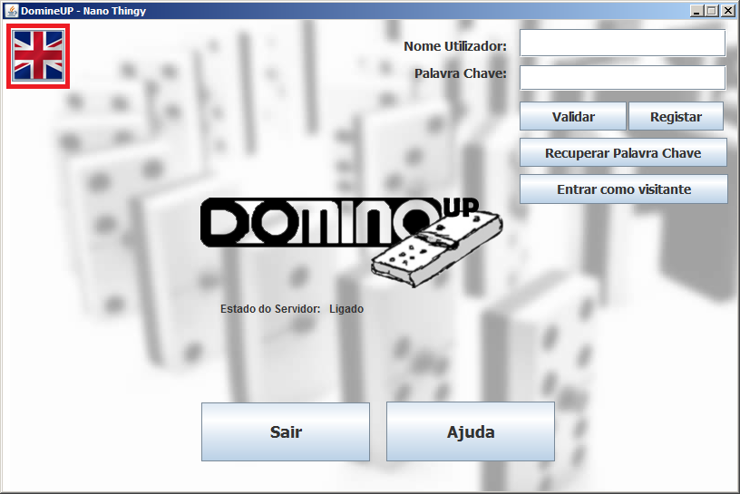
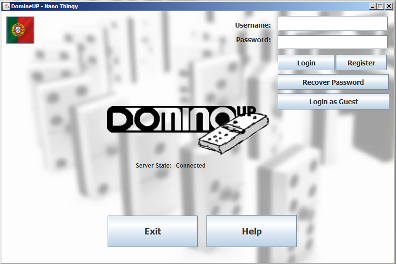

De modo a mudar a linguagem da aplicação, o utilizador deve premir o botão sinalizado por uma bandeira portuguesa que se encontra no canto superior esquerdo da interface, conforme a seguinte imagem:

Assim que o botão é premido, todo o texto que se encontrava em português é traduzido para inglês:

Para repôr o idioma original, basta premir o mesmo botão novamente.